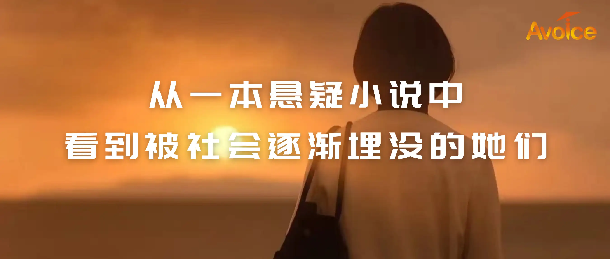
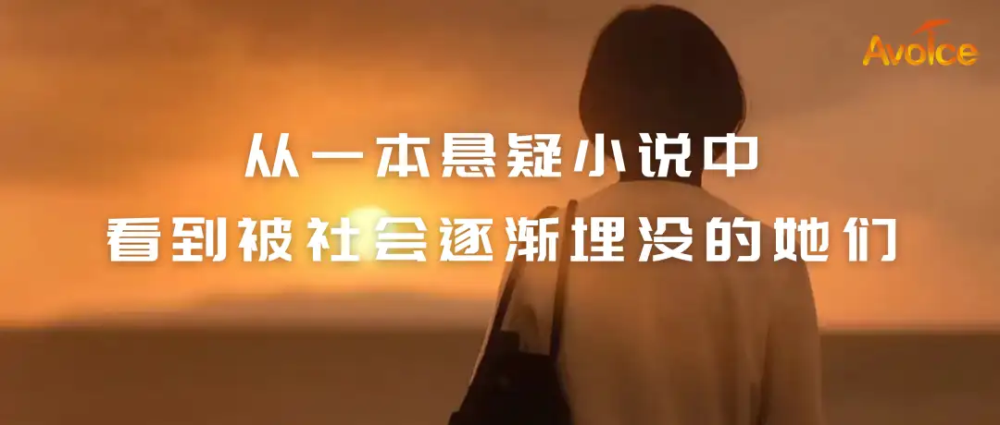
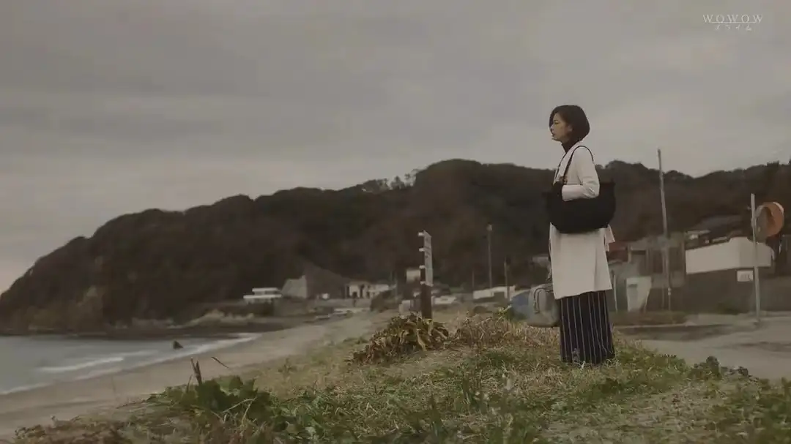
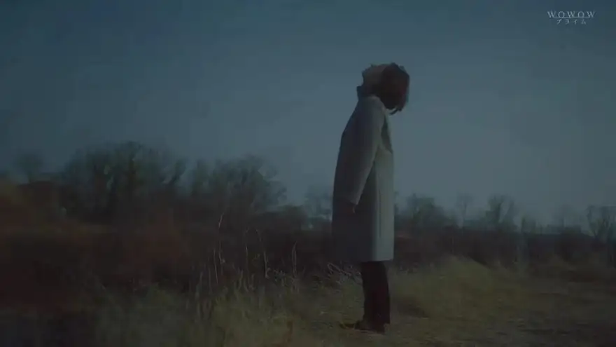
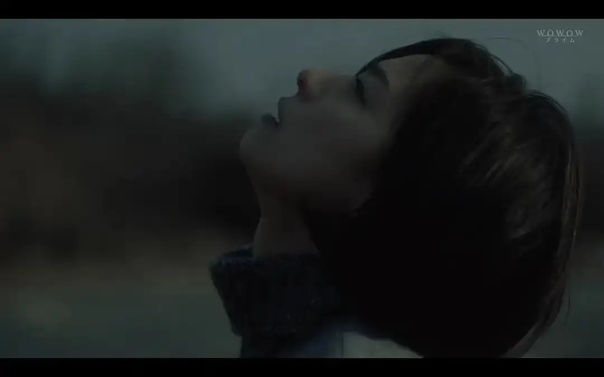
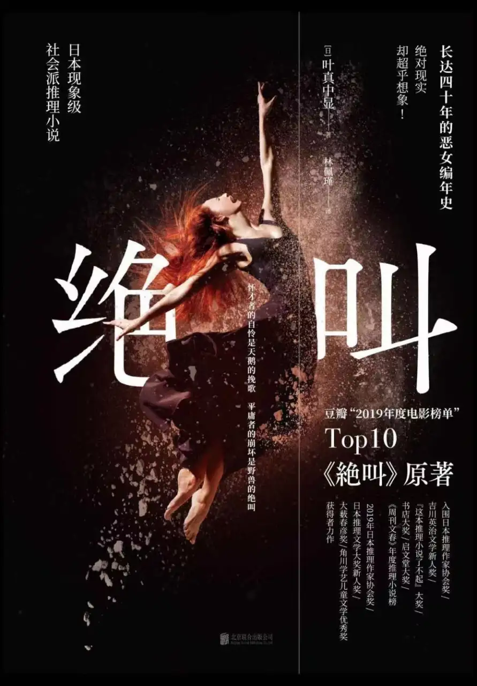

《绝叫》小说书评
“你出生那天呀，可晴朗得不得了呢！所以，你爸决定将你取名为‘阳子’。”
铃木阳子，是日本社会派推理小说家叶真中显创作的悬疑小说《绝叫》中的主人公。在她出生那天，万里无云，阳光普照，于是她有了“阳子”这个看起来有意境的名字。
不过，这个名字只是阳子父母随便取的。在日本第二次婴儿潮高峰中，“阳子”是两百零九万名婴儿中最普遍的女婴名字，而阳子弟弟的名字，“纯”，则是母亲购买了好几本命名书，起了二十多个候选名字才拍板定下来的。从一出生，因为性别，阳子就注定成为家庭中无关紧要的小角色，就注定得不到期待的关爱。
她像一条无法跳出鱼缸的金鱼，周围是无处不在的窒息感，而她无论怎么转头和改变方向，都是一堵难以跨越的玻璃墙。
#1
家庭，撕开幸福的伪面
“其实我比较想要男孩子。”母亲曾毫不在意、如实地告诉阳子这个事实。在弟弟纯出生后，母亲更是不断感叹，“好不容易才盼到一个儿子，我真是开心。啊，我甚至觉得生下这个孩子就是我毕生的使命呢！”
这是一个女孩得不到爱的回应的家庭。从小到大，阳子一直被“为什么我就是不如弟弟？”“为什么得不到家的关爱”“母亲为何如此偏心？”等问题困扰，而答案是难解的。这些问题和性别有关，和父权社会有关。而阳子作为一位受害者，作为一个无辜的孩子，从被打压、被无视的环境中成长的她，根本无法捕捉到这些深层原因。幼年的她感觉内心仿佛破了个洞，因为无法响应母亲的期望，她自责、空虚，慢慢地，她成为了缺爱、自卑、渴望承认和认可、渴望逃离的边缘人。
为什么阳子的母亲会这样呢？或许这就是父权制社会下的意识传递，即使是一名女性，在成长过程中潜移默化地接收着厌女的思想，也慢慢将这种态度直接表现在了女儿身上。
阳子的母亲出生在第二次世界大战后的第一次婴儿潮，阳子外公常对阳子母亲说“不用念什么大学啦！女人学那么多干吗？女子无才便是德！”。在那个时代，女性职场是为婚嫁准备的练习场所，女性会在职场中寻找另一半，而以倒茶打杂为主的工作，则被普遍看做成另一形式的新娘课程。很多女性在找到结婚对象后就会离开职场，回归家庭，阳子母亲便是其中之一。结婚后，阳子的母亲离开公司，成为家庭主妇，每天煮饭、打扫卫生、照顾孩子……她看来这就是自己的人生计划，因为她认为“男主外、女主内才是最好的”。
但是这真的是“最好”吗？阳子认为不是，即使母亲把“幸福”当作口头禅，还总让她对比那些贫民窟孩子的生活从而懂得知足常乐，但阳子依旧觉得“幸福”仅是家庭的虚伪面纱。 这不仅仅是因为阳子遭受着母亲不公的对待，更关键的是幼年的她亲眼目睹了父亲对母亲的性暴力。
虚假的幸福倒塌的令人猝不及防。一天晚上，阳子撞到父母因父亲偷腥而吵架，本应母亲占据上风的争论却以父亲对母亲野蛮而凶狠的性暴力而终结。阳子看到那个对她总是假笑、死不认错的母亲屈服于暴力之下，没有求助、没有挣扎，她突然感到不寒而栗。“家庭”，这个本就让她感到困惑的空壳轰然倒塌，美好的记忆也烟消云散——原来一切都是伪装，原来母亲每天幸福的笑容都是假笑。
随着阳子弟弟因意外去世、父亲欠债离家、房子被抵押、母亲投靠亲戚种种事件的发生，阳子离开了从小束缚她的家庭，离开了那个令人窒息的金鱼缸，但是，她的前路并不是肆意遨游的海洋。

#2
情感，无法依靠的泡沫
阳子离开家庭，开启了独居生活，就像杂志中描写的那些独居新时代女性一样，阳子步入了新的轨道，一切从头开始，这令她感到新鲜且兴奋。全书中最梦幻的情节也出现在这一阶段——阳子与山崎重逢，更“幸运”地是她发现过往的暗恋居然是双向的。
山崎是阳子的初恋，两人在初中美术社相识相交。初中时代，他们常一起画画、聊天并结伴回家。后来，山崎因搬家转学与阳子失去联系，而在最后一面也错过了和阳子告白的时机，这一别就是十年。十年后，两人在便利店重逢，此时的山崎是籍籍无名但开始崭露头角的漫画新人，阳子是一名普通的打工女孩，记忆与过往再次拉近两人的距离，重逢被他们看作为命中注定。“只要跟你在一起，我就有力量面对挑战，我需要你，请你跟我一起走。”山崎如是说到，这种被需要的情感，正是阳子多年渴求的，她母亲和家庭不曾给过的东西。重逢不久，阳子和山崎就很快步入了婚姻生活。
由于工作需求，山崎必须住在东京或东京近郊，这更唤起了阳子过往想要逃离家庭捆绑时对东京的憧憬之情，两人共同奔向了梦想中的大城市东京，那个阳子曾经渴望、甚至以为永远没办法获得一席之位的东京。在那里，阳子最初从事着琐碎又不断遭骂的电话接听工作，为梦想中的未来打拼，这样的生活平淡却幸福，但是两年后，因山崎工作不顺与外遇，两人感情出现裂痕，幸福的重逢便随风而逝了。
后续阳子的情感经历，就像书中的警官奥贯绫乃不忍对山崎说的那样，离婚后的她还登记过多段婚姻，但除了山崎，没有一个人活下来。第二段婚姻中阳子遇见的人，那个曾对阳子辱骂、大打出手，又靠着阳子生活的人，以及下一段工作中遇见的，把阳子当成赚钱工具的上司，都是阳子进一步踏入深渊的推手。可以说，没有自渡、缺少他人帮助和理解的阳子在情感世界中次次跌倒，也在追逐被认可和被需要的同时逐渐模糊和失去了自我。

#3
金钱，无限循环的陷阱
日本的婚姻制度只要求女性离婚后半年内不可再婚，离婚后的山崎无缝接轨地再婚进入下一个家庭，与此同时，阳子打算另寻收入更高、更稳定的工作，以创造更好的归宿。后来，她进入了新公司，成为了一名外出拉客户、冲业绩的保险业务员，并以此作为新人生再次开启的起点。但是这一起点并没有为阳子创造更好的归宿，而是进一步将她推入深渊。
最初，阳子尝到了高收入工作的甜头，她将赚来的金钱全部挥霍在穿衣、打扮、租房等上面，但随着新客户的减少，她陷入了工作的瓶颈。面对大量开销的需求以及来自上司的语言暴力和精神诱引，阳子把错误归因于自己，认为无法做好这份工作是自己不够努力，是自己让上司失望了，因此她更努力地尝试用各种方法获得上司的认同、赞美。最终，她踏上了以出卖身体完成工作获取金钱，再用金钱购物、消费的不归路，陷入无限循环的“卖身--金钱”的陷阱。而她获得金钱的手段也不断趋向犯罪与黑暗。可惜的是，尽管阳子为上司付出了自己的一切，上司却只将她作为供其赚钱的微不足道的工具。最后，阳子因为出卖身体被迫离开了这个公司。有着太阳、光明寓意名字的阳子，一步一步踏入了黑暗的深渊。
阳子步步踏入黑暗深渊的过程是本书作为悬疑小说的重要情节，本书的开头便是一位女性孤独死去被发现，随后引出了后续的故事。

#4
结语
由于《绝叫》是一本悬疑小说，为避免剧透精彩的情节，以上叙述只围绕主人公阳子陷入深渊的几个情节进行简要叙述。整体来看，本书的情节环环相扣颇为吸引人，其内容不仅巧妙地结合了日本时代大背景元素，如孤独死、地震、婴儿潮，还凸显了父权制下的女性生活，是一个值得品读、回味和思考的故事。

这本书中的女性形象阳子，更是可以作为我们观察女性生存、反思女性生活的一个原点。 我们看到从出生开始，阳子便在父权体制下受到不公对待，以至于在生活中渴望得到别人的认可，而在后续的情感过程中也是如此，这也是她选择出卖身体做好事业以此获得上司认可、获得资金来源的起点。
可惜的是，在阳子不断经受语言暴力、肢体暴力、精神压迫的过程中，没有人理解，没有人帮助，她也没有寻求直接的援助，因此，即使阳子从小就想要逃出让自己感觉窒息的金鱼缸般的世界，但她还是最终在不断碰壁下失去方向。
“人只是一种自然现象，没有道理可言。”是一句不断被阳子脑海认可的话，她用这句话看淡自己的经历，也用这句话掩盖自己的罪行。但是在现实生活中，我们不是一种“自然现象”，虽然我们无法亲身经历阳子的生活，所以也无法站在绝对道德的制高点上责备、愤恨阳子，但是如果有类似阳子的事情发生在我们身上，或是在我们身边，即使面对无所不在的外界压迫，我们也可以努力看清牢笼与束缚，可以尽力去避免，可以寻求外界组织或他人的帮助，或集合女性的力量去改变、去发挥人的能动性，从而不让另一个阳子再出现。
女性，因为天生的性别，常常从出生开始就像阳子一样被定义、被限制，我们期待更多女性觉醒，看到束缚，看到不公，进而更多地去尝试，去见识，去培养独立思考能力，不依附任何人，先成为独立的个体，先去爱自己。
健全的人格，智慧的头脑，饱含勇气的态度，以及负责任、有担当的组织是改变现状的最好办法。我们也希望更多人能了解女性保护组织，发挥女性的力量并且必要时展开求助，这也是Avoice的初衷。
阳子，是面对晴空万里天气所起的名字，光亮的地方也应该是阳子们应该站立的地方。在不断更新的时代，用我们的努力让阳子真正站在阳光之下吧！
文稿&校改 | 秦科、张思雨
图片来源 | 网络
排版&封面制作| Zoey